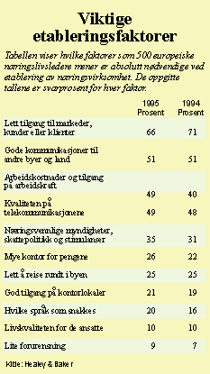
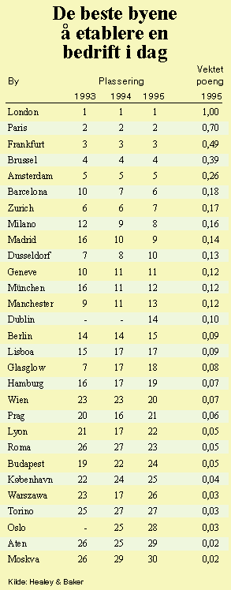
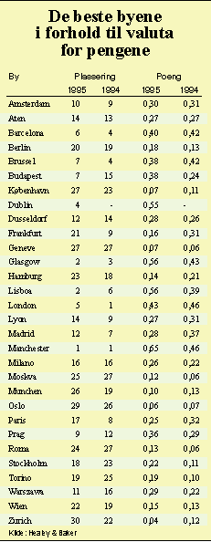
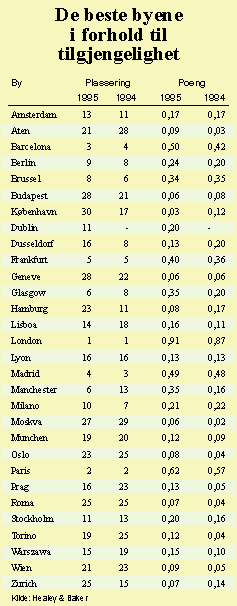

![[Forrige artikkel]](/me/ts/ne/gifs/prev.gif)
![[NE hjemmeside]](/me/ts/ne/gifs/ne-small.gif)
![[Neste artikkel]](/me/ts/ne/gifs/next.gif)
Undersøkelsen er basert på intervjuer med toppledere eller styreformenn i 500 større europeiske bedrifter, og gir et interessant innblikk i næringslivets prioriteringer og strategiske tenkning.
Bare på ett område topper Oslo: Fravær av forurensning. På de neste plassene følger Stockholm, Genève, Zürich og København.
På den annen side er det bare ni prosent av de spurte som legger vekt på lite forurensing når de skal velge hvor de vil etablere seg.
Størst vekt tillegges lett markedstilgang med 66 prosent, fulgt av gode kommunikasjoner 51 prosent samt lønns- og arbeidsomkostning og kvalitet på telekommunikasjonene begge med 49 prosent.
Undersøkelsen viser at London, Paris, Frankfurt og Brussel beholder sine topposisjoner. Nykommeren Dublin spretter rett opp til 14. plass på grunn av lave kostnader og næringsvennlig politikk. Paris scorer jevnt høyt på alle parametre, er den byen som tilbyr beste livskvalitet.
De byene som har fått flest nyetableringer er Madrid, Lisboa, Budapest og Warszawa.
Byene hvor næringslivet synes de får mest igjen for leieprisene, er Manchester fulgt av Lisboa, Glasgow og Dublin. Oslo har det siste året her falt ned fra 26. til 29. plass.



